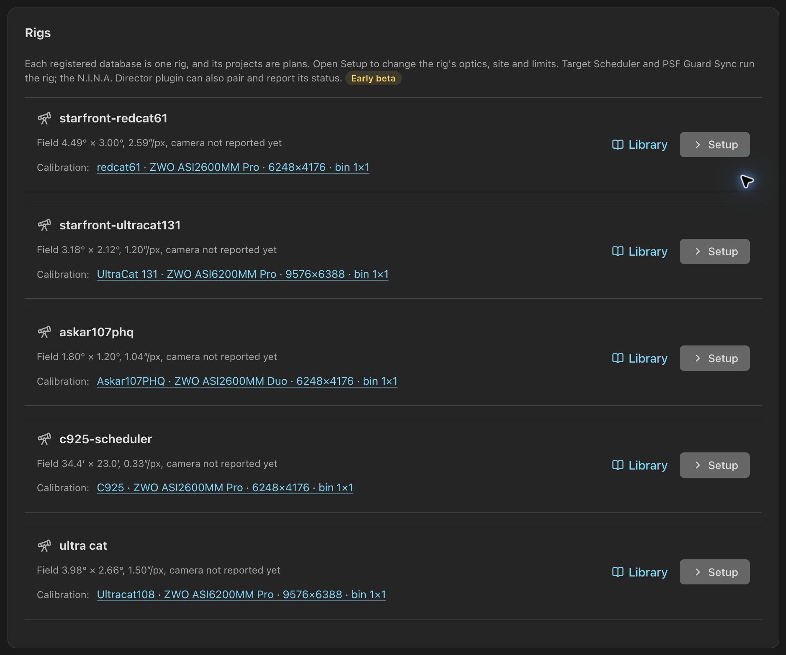
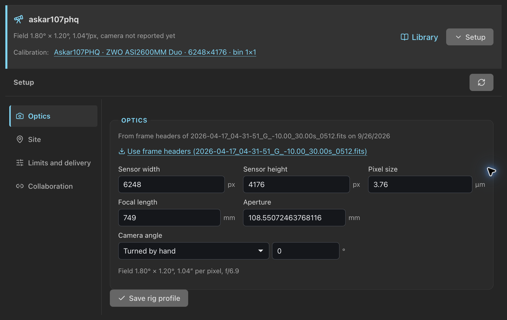
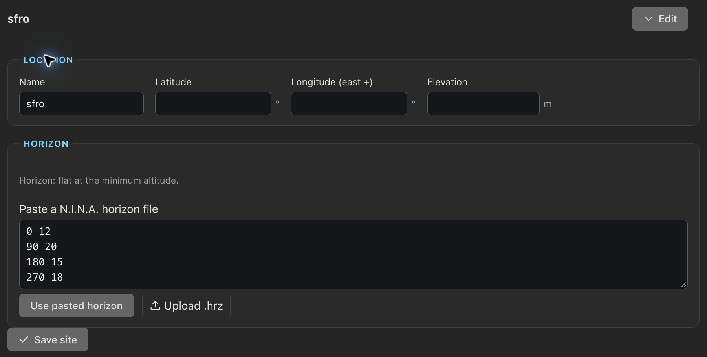
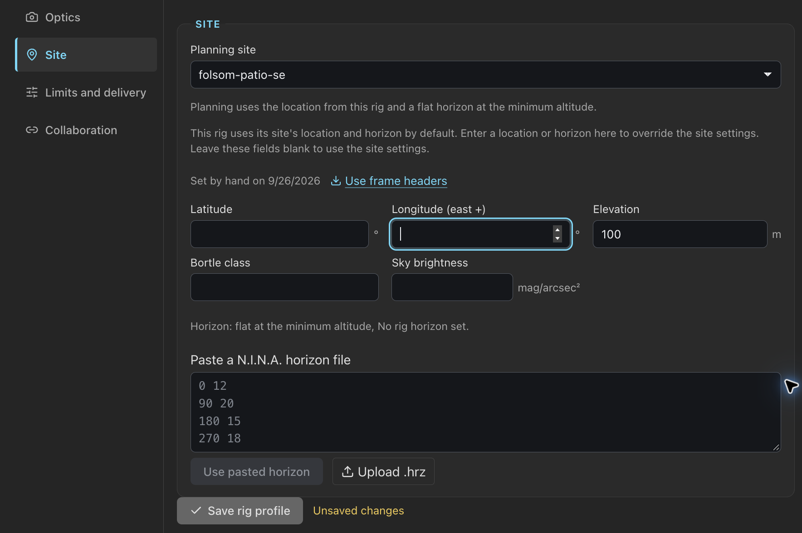
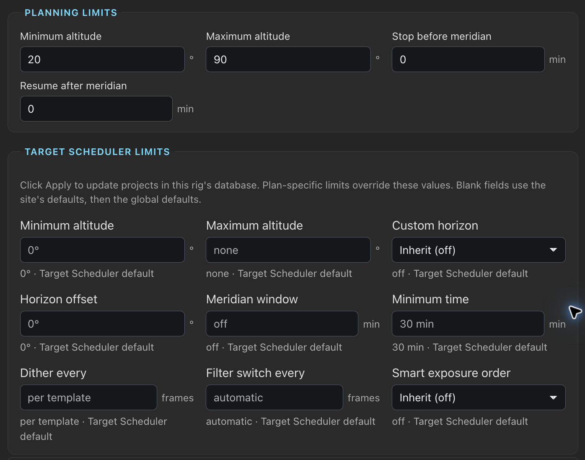
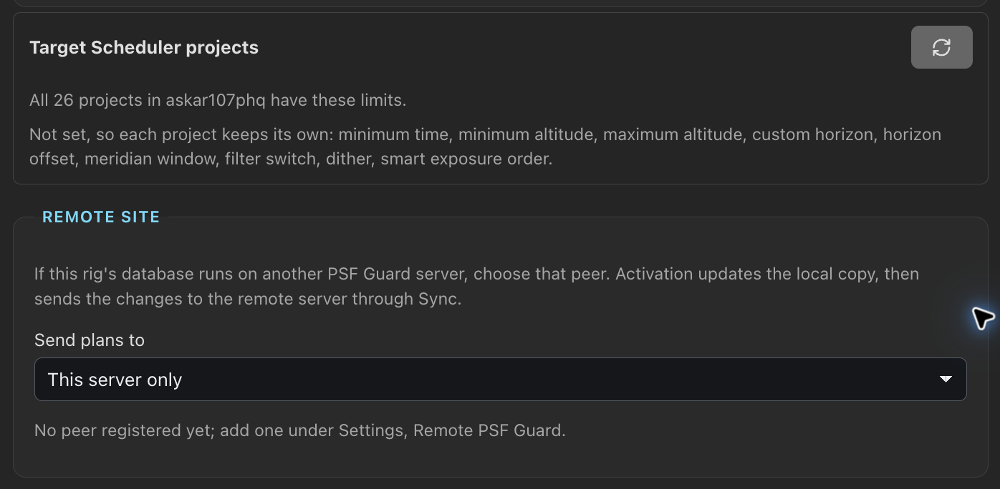
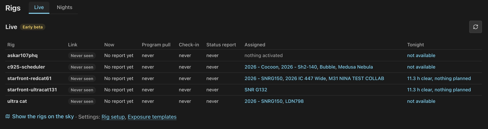
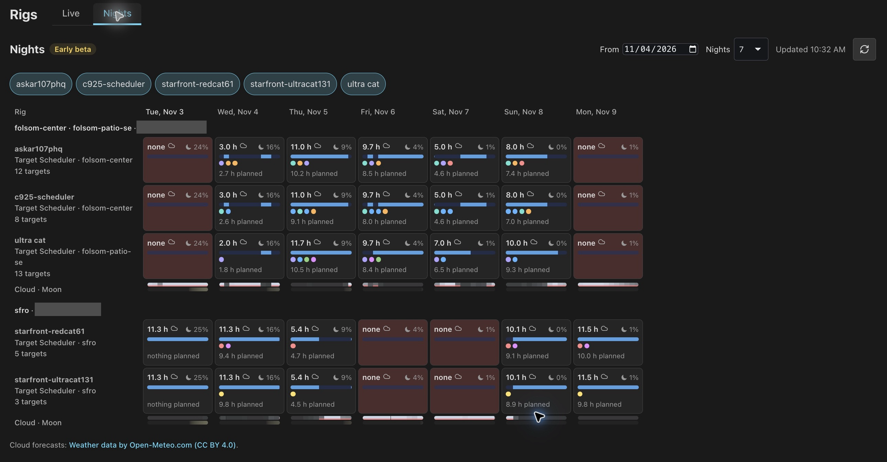
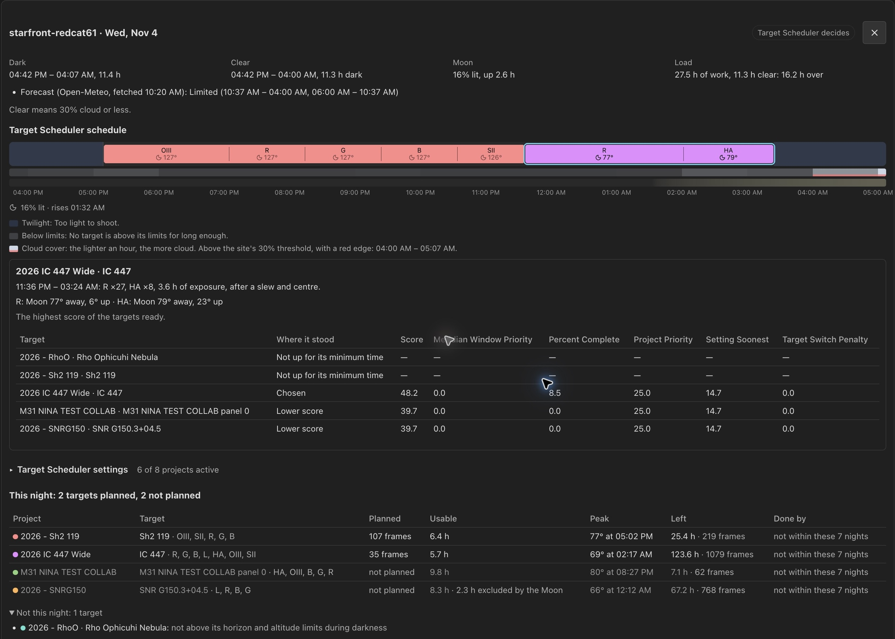
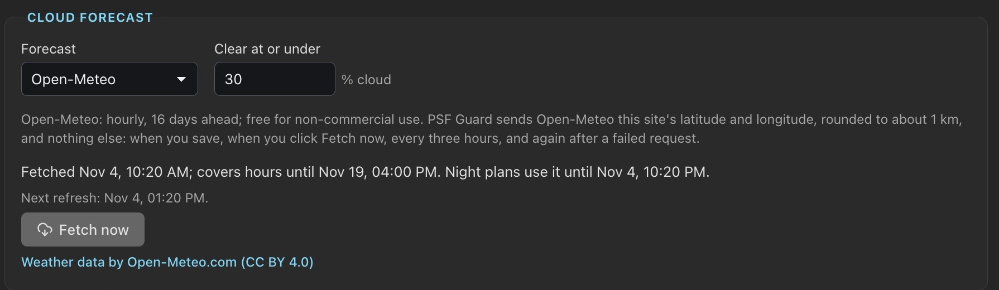

Rigs, Sites & Live
Every registered database is a rig. Give each rig its optics, site and limits, compare upcoming nights in Rigs › Nights, and check reporting rigs in Rigs › Live.
The rig list
Settings › Databases & rigs › Overview lists registered databases and their rigs. Each entry shows the rig’s field of view and pixel scale, whether its plugin has reported a camera, its remote planning destination and its latest plugin status. A new database becomes a rig once the Library opens. Setup opens the rig's setup in place; Library opens its catalog.
Under Calibration:, each row lists the calibration rigs its catalog records, with how many values each sets for itself. A calibration rig is a telescope, camera, frame size and binning, as the calibration library records it. Each name opens that rig's settings under Settings › Calibration, and the note above Calibration's rig list links back here.

Rig setup
The selected rig's header stays above its setup. Sections sit in a rail on the left on a desktop and in a strip on a narrow screen: Optics, Site, Limits and delivery and Collaboration. Edits stay in the form while you switch sections, and while the setup is folded; Save rig profile saves them, and Unsaved changes beside it says when there is something to save.
Settings asks before Done, × or a click outside closes it over edits a form has not saved: Keep editing or Close without saving. The browser asks before a reload drops them.

Optics
Optics hold the unbinned sensor size in pixels, pixel size in micrometres, effective focal length and aperture in millimetres, and how the camera angle changes: a rotator, turned by hand between sessions, or fixed. The field of view and pixel scale update as you type.
Use frame headers copies sensor size, pixel size, focal length, aperture and site from the newest frame the server can find, and says which file. Headers from N.I.N.A. record binned values; PSF Guard folds them back to the sensor. Each section shows the source of its values: frame headers, set by hand, or reported by the plugin.
Sites and horizons
A site defines a location (latitude, east-positive longitude, elevation) and a horizon. Add and edit sites under Settings › Rigs › Sites. Each rig picks its Planning site and takes the site's location and horizon, unless its own fields say otherwise: a location typed into the rig, or a horizon pasted there or reported by the plugin.
A horizon is a N.I.N.A. .hrz file: one azimuth altitude
pair per line in degrees, # for comments. Paste or upload it, and
download it back for N.I.N.A. PSF Guard sorts the points and closes the curve at
north. It refuses a line that is not two numbers, an azimuth outside 0–360, an
altitude outside −90–90, or a repeated azimuth, and identifies the invalid line.
Visibility, feasibility and the program sent to the plugin all use the resolved location and horizon. A rig with neither has no location, and its horizon is flat at its minimum altitude.
Opening another site keeps the edits of the one you left; Save site saves them, with Unsaved changes beside it until then.


Limits and delivery
Limits and delivery contains the altitude and meridian limits planning uses, the rig's Target Scheduler scheduling limits, and Remote site.
The rig's Target Scheduler limits also reach projects outside a saved plan, such as ones made in N.I.N.A. Below the fields, Target Scheduler projects compares the saved limits with every project in the rig's database and lists each one that differs, with what will change. Save the rig profile first; Apply to N projects then writes them, and sends the rows to the rig's remote site when it has one. A plan's own limits still win for its project. Apply is refused when a project or the limits changed since the list was read. Nothing applies by itself; a project made later waits for the next Apply.


Remote site
When the rig runs on another PSF Guard, set Plans push to, under Remote site, to the Sync peer that holds the rig's real database. Activation then pushes the plan to that peer. Leave it at This server only when N.I.N.A. writes this server's database. See Rigs at another site.
When a site misses an activation
A remote site can miss an activation: it was offline at Activate, the push failed, or it has not run yet. The plan then reads Needs activating even when the rows here match it, and says why, here for a site named observatory-pi:
- the summary's tooltip and the bar at the top: "observatory-pi hasn't received this activation";
- the rig's line on the Rigs tab: behind · not sent to observatory-pi.
The bar and the activation dialog offer Send to observatory-pi again (without "again" before a first try). The dialog lists each such rig with the error and when it was tried. Neither shows the button once every site has the activation.
The server also sends it on its own once the site answers: a successful Test connection under Settings › Sync, a sync with that peer other than a pull that writes, or another push that reaches it. It sends only the latest activation of each plan, never one the site already applied. A pull that writes does not send, since the site's rows may have replaced the ones here; the plan may then ask to be activated again first. The server log records what it sent and what failed.
Live
Open Rigs › Live for reports from rigs running the Director plugin. The header's Rigs control opens this view and shows the fleet's status. The Tonight column links each rig to its predicted schedule on Nights.
On the Sky, each reporting rig is drawn on the coverage map where it points now. A list of rigs sits beside the map; choosing one turns the map to it. A quiet rig is drawn dashed red. A rig that reports no mount position is placed at its planned target, dotted and labeled at target.

The Live table has one row per rig:
| Column | Shows |
|---|---|
| Link | Online within three minutes of any plugin call, Quiet within thirty, Offline beyond, Never seen before the first. |
| Doing | Phase, target, current operation and how long, wait reason, safety, queue depth and errors, from the last status report. A report older than its stated lifetime is marked stale. |
| Contact | How long since the rig pulled its program, checked in, and reported status. |
| Frames | Saved frames grading has not accepted yet. |
| Plans | Activated plans the rig is assigned to, each a link to its workspace. |
The table refreshes every fifteen seconds. A read-only account cannot open Settings, so Rigs › Live shows rig setup and the template library read only under the table.
Plan each rig's nights
Early beta. Open Rigs › Nights to compare your rigs across 7, 14 or 31 nights. Each rig needs a site. Choose From for a starting date or Tonight for the current observing night. Each cell shows clear dark hours, the Moon and the plans the rig would shoot. A red cell has no clear dark hours, even if the forecast leaves daylight hours clear.
The grid groups rigs whose sites are within one degree in latitude and longitude. Each group has a Cloud · Moon row: the cloud bar has a red edge where cloud cover exceeds the site's threshold; the Moon bar is brighter when the Moon is higher or more fully lit. Hover for cloud cover, moonrise, the Moon's highest point and moonset. A group without a forecast has no cloud bar.
Each filter run shows the minimum separation between the Moon and its target. The angle is dimmed when the Moon stays below the horizon. Select a block to see each filter's minimum Moon separation and highest Moon altitude. The Moon strip below the cloud band shows its rise, highest point and set.
Select a cell to open its schedule. Choose a target block to see why Target Scheduler or Director would select it. Not this night lists excluded targets and their reasons. Tonight's schedule starts from now. Future-night schedules account for frames planned on earlier nights. Times include estimated overheads and are predictions, not a guarantee of what the rig will capture.
Updated shows when the displayed plans were computed. The server saves those plans and refreshes them when their inputs change. Compute again requests a fresh calculation, shown in the header's job list.


Mark available hours
With editor access, select a night and use Mark this night. Choose Available, Not available or Limited. For limited hours, a blank From starts at dusk and a blank To ends at dawn. Under For, choose one rig or every rig at its site, then click Save mark. Shift-click another night in the same rig's row to mark a range.
Set the site's Time zone in Settings › Presets › Sites. Without one, entry times use the browser's zone; the form shows the zone in use. A rig is available only during hours allowed by both its own mark and the site's availability. Clear mark removes the manual mark; a site forecast can still apply.
Marks and forecasts change planning estimates only. They do not start, stop or block a rig. N.I.N.A. and the rig's safety monitor still control acquisition.
Use a cloud forecast
Open Settings › Presets › Sites, click Edit for a site with latitude and longitude, and choose Open-Meteo or MET Norway under Cloud forecast → Forecast. Set Clear at or under to the maximum cloud cover, in percent, that counts as clear (30% by default). Click Save site.
Forecasts are off by default. Enabling one sends the site's coordinates, rounded to about 1 km, to the provider. The server requests updates every three hours; Fetch now requests one subject to the displayed retry time. A manual site mark overrides the forecast for that night; a rig's own mark still applies.
The grid marks forecast-based nights with a cloud, and the timeline shows hourly cloud cover. Night plans use a forecast for 12 hours after receipt. After it expires, or beyond its covered dates, the forecast no longer restricts availability: those hours count as clear for planning, not as a prediction of clear weather.

Override a Director rig's night
Mode in rig setup chooses whether Target Scheduler or Director runs the rig. Until set, PSF Guard infers the mode from reports; pairing Director sets it to Director.
For a Director rig, click Edit night. Drag a block to move it, or select it and use the arrow keys in 15-minute steps. Moving a block pins the target at its new time and prevents it from running during the original time slot. The block menu also offers pins and exclusions. Drag a pin's edges to change its duration, drag the hold line from the right to hold the rig, or choose Set a plan order.
Review the predicted schedule, then click Save changes or Discard changes. A running session finishes its exposure and follows saved overrides at its next check-in. Overrides only restrict the existing program: they cannot relax altitude, Moon or meridian limits. They expire at the end of the observing night, at noon. Another editor's conflicting save requires reloading the night.
Change Target Scheduler priorities
For a Target Scheduler rig, expand Target Scheduler settings and click Change settings. Set projects or targets active or inactive, or change a project's Priority. The schedule previews the changes before you click Save changes.
Saving requires editor access and a server with database management enabled. PSF Guard updates the rig's database and, for a synced catalog, its Target Scheduler file too. These changes apply to every night until changed again. Only projects in the rig's N.I.N.A. profile are edited. If another edit changed a row after you loaded it, PSF Guard refuses to save that row and explains the conflict.
If PSF Guard updates the rig database but cannot write the Target Scheduler file, the panel explains the failure. Use Sync → Data Transfer → Send planning to send the saved change. If the files disagree before saving, review them in Data Transfer: Merge databases uses Target Scheduler's settings, while Send planning sends the rig database's settings.
Early beta: the upcoming Director plugin
A paired Director plugin pulls its rig's program from the last activation over HTTP, keeps running on it through a network outage, checks in each saved frame, and reports live status. Saved frames count as pending credit until grading accepts them; a receipt is evidence a frame was taken, not that it passed. Pairing uses one-use codes an operator issues over the API; there is no pairing screen yet. Pairing does not start a sequence or grant equipment control. The Director plugin is separate from PSF Guard Sync, which transfers database changes and image files.
Without the plugin, activation still writes ordinary Target Scheduler rows, and the Target Scheduler plugin runs them as before.